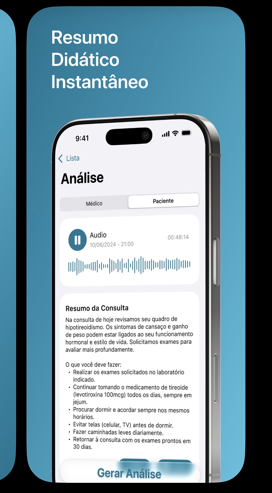

Clairfy
Consultas médicas são cheias de jargão. Pacientes saem confusos e perdem informações. O Clairfy gera resumos claros e instantâneos para médicos e pacientes — a partir do áudio.
Problema
Médicos falam em linguagem técnica. Pacientes esquecem 40–80% do que ouviram. Nenhum app focava na consulta em si.
Processo
CBL + SCRUM — definição do desafio, entrevistas com usuários, prototipação no Figma, desenvolvimento iterativo em Swift.
Meu papel
Desenvolvimento iOS (Swift/SwiftUI), design UX, QA via TestFlight, publicação na App Store e pitch — incluindo a rodada final Top 10 do Startup Garage e o podcast BioHub/Tecnopuc.
Resultado
Live na App Store com distribuição internacional. Top 10 no Startup Garage. Destaque no podcast BioHub.